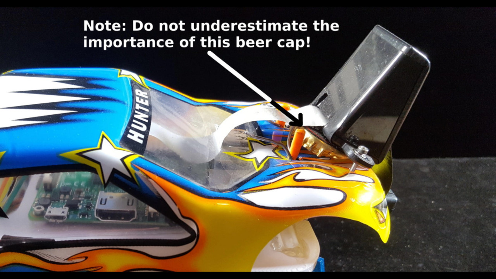
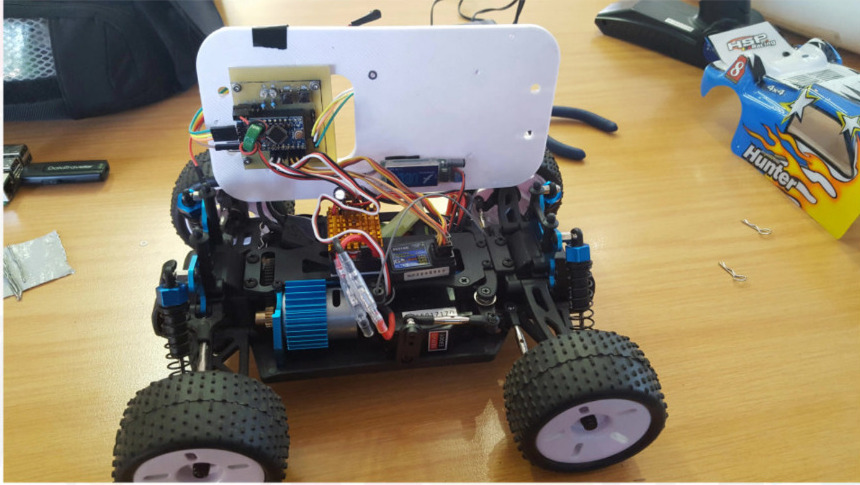
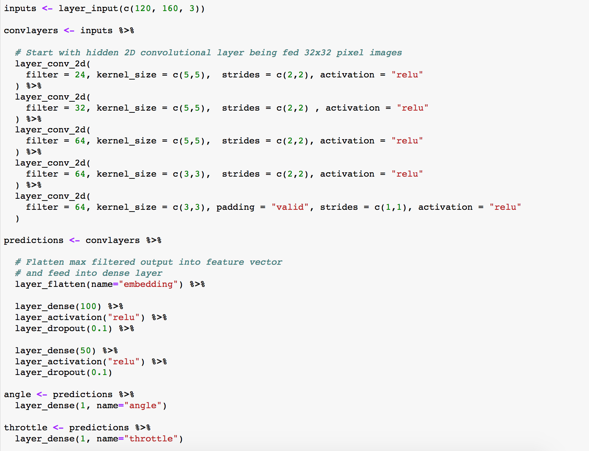
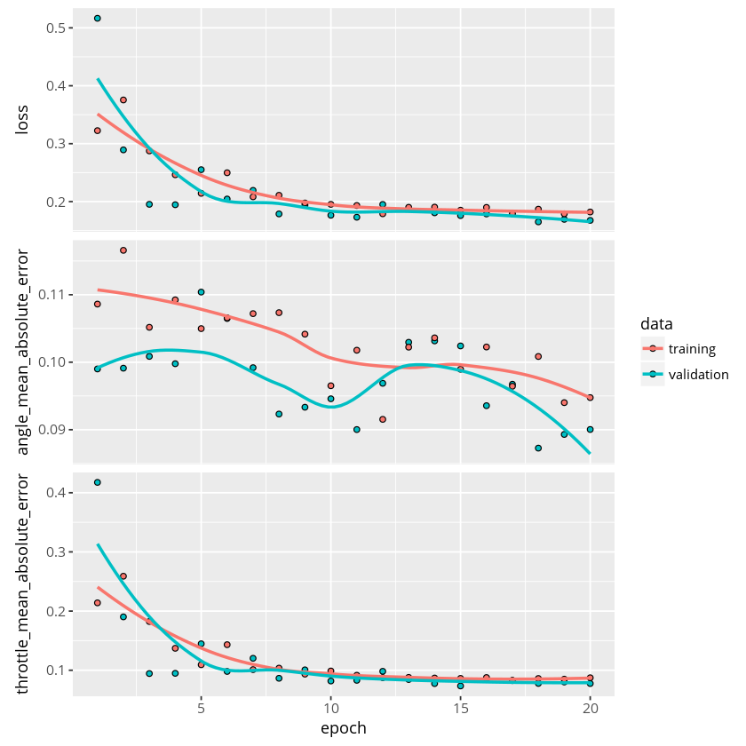
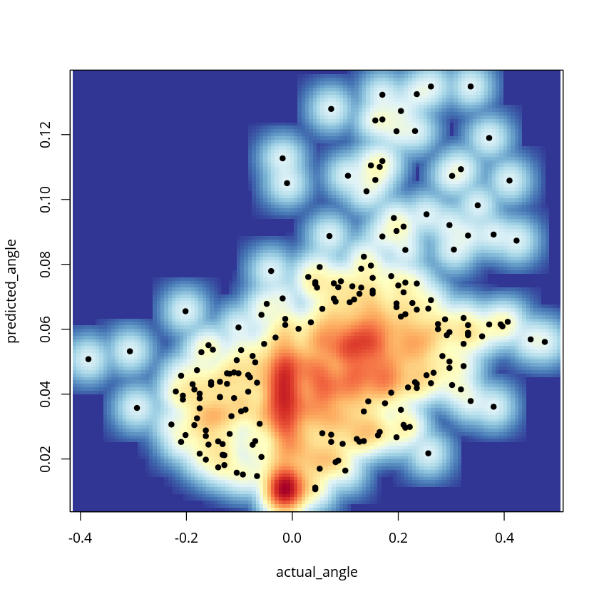
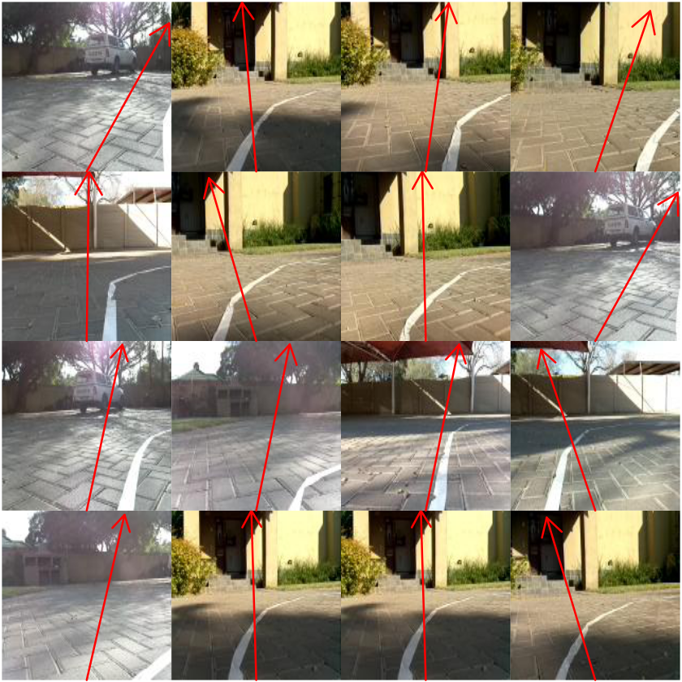
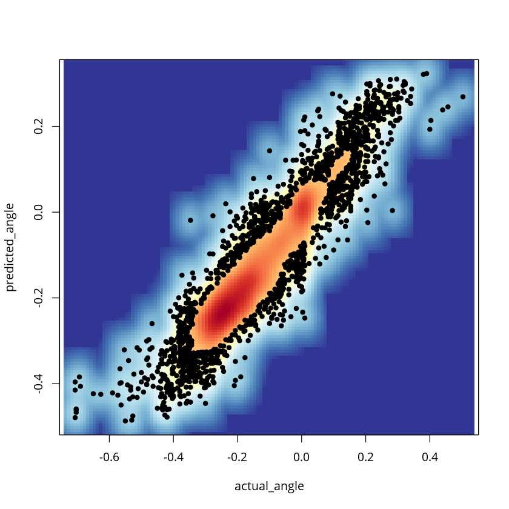
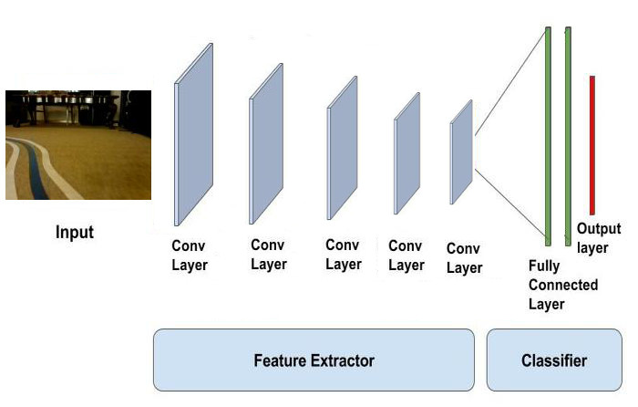
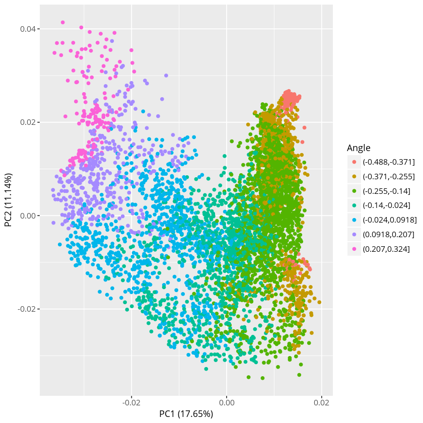
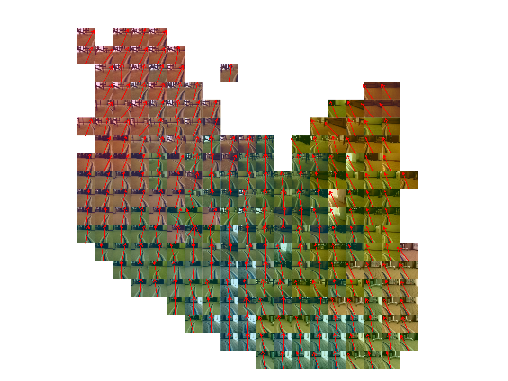

R is for Racing!
R is for Racing!
Who am I?
- Schalk Heunis
- Big Data at Vodacom in June 2017
- House4Hack Founder in July 2011
- Started using R in 2002
Inspired by Will Roscoe's Donkey

https://github.com/wroscoe/donkey
RC Donkey ← Donkey -wifi -smartphone +RC
 https://github.com/house4hack/rcdonkeyAutonomous RC car - Theory
- Record video + RC inputs
- Train a convnet: photo → (angle,throttle)
- Read video in real time, predict control, steer car
1. Record video + RC inputs

2. Train in Keras for R
First try :(
"In theory there is no difference between practice and theory, but in practice there is"
2½. Debug
Bad driving
After some practice...
Digging deeper
PCA on Feature Layer
PCA on Feature Layer
Structure learnt
Video of car driving
Video by Philip (PiGuy.co.za)
Presentation + Notebook + PC board + Arduino + Code
https://github.com/house4hack/rcdonkey